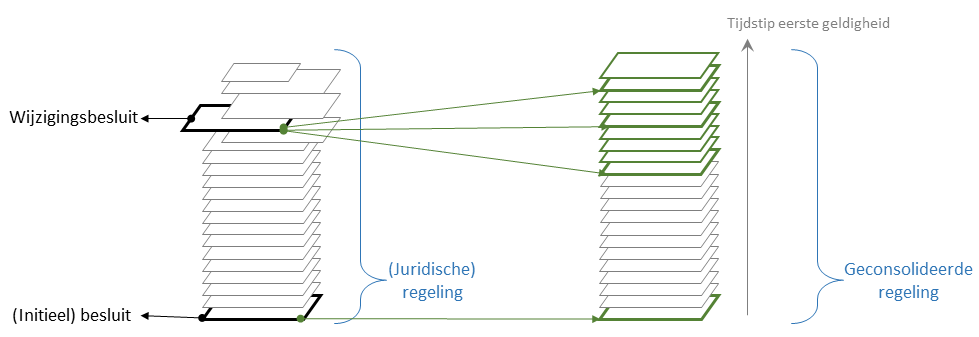

Consolidatie van besluiten
Consolidatie is het proces om uit de bekendgemaakte en in werking zijnde besluiten af te leiden wat op elk moment in de tijd de geldende regelgeving is.
Consolidatie van juridische voorschriften van algemene strekking

Juridisch bestaat een regeling uit de verzameling besluiten die iets zeggen over een regeling. De regeling ontstaat uit een initieel besluit waarin juridische voorschriften van algemene strekking worden geformuleerd. Het initieel besluit vormt de eerste versie van de regeling. Volgende (wijzigings-)besluiten bevatten wijzigingsinstructies die aangeven hoe de regeling gewijzigd wordt. Daarnaast kunnen de besluiten aanwijzingen bevatten die aangeven wanneer de initiële regeling of de wijzigingen in werking treden (= juridische werking krijgen) en eventueel wanneer de geldigheid ervan begint of ophoudt.
Als ooit op een juridisch gedegen manier bepaald moet worden hoe de regeling luidt, dan geldt de verzameling besluiten als maatgevend. Omdat een voorschrift niet in werking kan treden als het niet bekendgemaakt is, is de bekendgemaakte versie van het besluit doorslaggevend voor het bepalen welke voorschriften in werking getreden zijn, en hoe de voorschriften luiden. Door de informatie uit alle bekendmakingen te combineren kan achterhaald worden hoe de tekst van de regeling op een bepaald moment in de tijd luidt. Omdat de bekendmakingen de juridisch authentieke bron zijn voor een regeling, worden hoge eisen gesteld aan de onveranderlijkheid en duurzaamheid van de bekendmakingen.
Voor dagelijks gebruik is de juridisch gedegen manier om achter de geldende tekst van een regeling te komen veel te omslachtig. Daarom wordt elke verandering in de juridische regeling (dus in de verzameling besluiten die samen de juridische regeling vormen) "geconsolideerd" in een geconsolideerde regeling. In de geconsolideerde regeling is vastgelegd wat de uitkomst van het juridisch gedegen proces van het bepalen van de tekst van de regeling is. De tekst van de geconsolideerde regeling wijzigt zodra een voorschrift of wijziging daarvan in werking treedt, geldig wordt en/of ophoudt geldig te zijn. Het resultaat wordt een toestand van de geconsolideerde regeling genoemd. Omdat besluiten niet op volgorde van bekendmaking in werking hoeven te treden, en soms voorschriften bevatten die met terugwerkende kracht geldig worden, kan een wijziging uit een besluit leiden tot een wijziging van de tekst voor meerdere toestanden van de geconsolideerde regeling.
De geconsolideerde regeling wordt publiek beschikbaargesteld, maar is vanuit juridisch oogpunt geen authentieke bron maar een serviceproduct. In de praktijk is de geconsolideerde regeling wel een veelgeraadpleegde bron, en wordt pas teruggevallen op de juridisch gedegen manier van het bepalen van regeltekst voor als er bedenkingen zijn bij de kwaliteit van de consolidatie, of als dat vereist wordt voor een (juridische) procedure.
Consolidatie van (te consolideren) informatieobjecten
In STOP kan naast tekst ook niet-tekstuele informatie deel uitmaken van juridische voorschriften van algemene strekking. Dat verloopt via het mechanisme van (te consolideren) informatieobjecten. Zo'n informatieobject ontstaat als een (initiële) versie ervan als bijlage bij een besluit bekendgemaakt wordt. Een wijzigingsbesluit kan daarna het gehele informatieobject vervangen door een nieuwe versie bij te sluiten of, indien de aard van het informatieobject het toelaat, een wijzigspecificatie bij te sluiten dat de wijziging van het informatieobject beschrijft. In de besluiten wordt ook de inwerkingtreding en eventuele begin en einde van de geldigheid vastgelegd.
In STOP wordt zo'n informatieobject op een vergelijkbare manier geconsolideerd als een regeling. Omdat een besluit alleen een informatieobject kan wijzigen en een informatieobject onderdeel kan zijn van de voorschriften uit meerdere regelingen, beschrijft STOP een geconsolideerd informatieobject als een zelfstandige entiteit. Net als voor de tekst van een regeling bestaat een geconsolideerd informatieobject uit toestanden, die de geldige versie van een informatieobject op een bepaald moment beschrijven.
Proefconsolidatie
In STOP wordt soms ook de term proefconsolidatie gebruikt; daarbij wordt de consolidatie uitgebreid naar een of meer nog niet in werking getreden besluiten, die behandeld worden als ware ze in werking getreden. Voor de toestanden van de regelingen en informatieobjecten die volgen uit de extra besluiten kan in dat geval geen geldigheid worden vastgesteld. het is wel mogelijk de inhoud van de toestanden te bepalen, dus de tekst van een regeling of de gegevens in een informatieobject.